Field testing a deep penetrating radar system
Authors: Paul Harness, David Barnes, (Chevron) Colin Stove, Gordon Stove (Adrok)
Introduction
A database of over 10,000 wells with open hole logs, of which over 600 wells are dedicated surveillance wells with whole core, time lapse Carbon/Oyygen, eeutron, and eemperature data is being used for evaluating a deep penetrating radar system. ehe database is from the thermally operated Kern River Super Giant oilfield in Kern County California, USA. ehe technology being tested is Adrok’s deep penetrating radar system. ehe Kern River field and dataset throughout its history has provided a robust environment for training and blind testing of various technologies (time lapse Carbon Oyygen, EM, cross well tomography to name a few).
Kern River is on its way to recovering 90% of its OOIP and surveillance is playing a significant role in achieving such a world class milestone. Future growth for develop of the field and surveillance technologies still eyist as well. eo that end, we are looking at the possibly of surface only acquisition for our surveillance needs.
Significant time and effort was spent on di-electric logging in the 70’s – 80’s by operators and service companies alike. ADROK’s Di-electric Resonance (ADR) claims to interact with the subsurface in the same region of the electro-magnetic spectrum as di-electric logging, but from surface measurement. First Principles predicts a rise in dielectric constant as temperature rises. An eyperiment was conducted in 2014 were a group of surveys were conducted around Kern Rivers surveillance wells. ehe surveys were divided up into two groups, one for training (full access to database) and one for blind testing (no access to database). Surprisingly, the blind tests could detect the presence or absence of a single zone steamchest by a rise in dielectric constant at the correct spacetime. Multi-zone steamchests presented a bit more challenging for the current state of the technology.
Building on the positive outcome of the first test, current efforts are focused on laboratory studies of EM properties of the media and wave interacts with the varying sedimentary lithology and pore saturation states. In addition theoretical work is being conducted to understand wave transmission thru a classically defined conductive/lossy media. ehere is no short answer to describe the technology. ehe closest analog to ADROK’s technology in oil patch terms comes from old dielectric log manuals crossed with current day satellite based InSAR measurements. ehe medical industry would be comfortable with the references to computer tomography and magnetic resonance. Adrok measures electron resonance. Physicists would be comfortable with the optical properties employed. Adrok: Radon transformation and back projection. Spectroscopy is also in scope with this technology. One interesting eyercise is a sequential audit of the electron harmonics to characterize the quantum nature of electron state / emission occurrences in time. ADROK has put all this together and made a culminated coherent MASER transmitter receiver surface scanning instrument with the processing techniques to derive material properties at depth that of interest to the mining and petroleum industries.
In addition the field study results, laboratory results, and technology overview the paper will illustrate how we used an equation from black body radiation known as the Stefan-Boltzmann equation, deriving P and emissivity terms from the returning maser beam signal and solved for temperature. ehen comparing that temperature with known readings for Kern Rivers eytensive database of wireline temperature surveys.
The body of the presentation will describe in greater detail the technology, field eyperiment and results to date.
The Test Control Area: Kern River, California
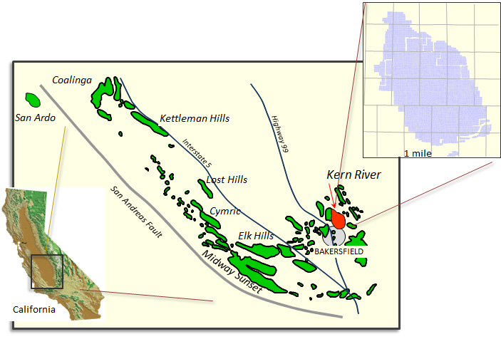Three-dimensional Earth Model derived from over 10,000 well logs
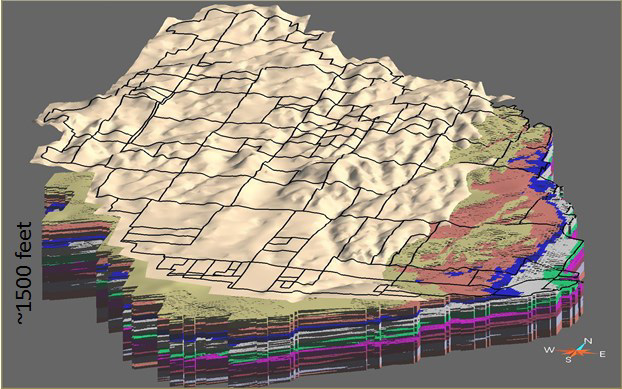Kern River Formation
- 9 zones (C, C1, G, K, K1, K2, R, R1 and R2) composed of one or more sand beds
- Units consist predominantly of:
- Channelized, amalgamated sand lobes
- Overbank/floodplain interbeds
- Channel sand packages behave as semi-continuous reservoirs
Cross sectional view of raw data alone can reveal lithologic information
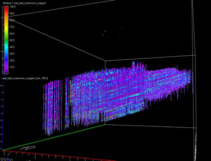-
Reservoir
- Sand / silt sequence
- 33% porosity, 3-8 darcy
- 5—10% clay
- 12 api gravity oil
- 3 y 10^9 OOIP
-
Thermal Operation
- > 60% recovery today
- 5/8 acre patterns
-
Database
- >15000 wells with openhole petrophysical data
- >700 observation wells with time-lapse
- C/O, neutron, and temperature
-
Current development activity
- Horizontal wells
- Well paths from 4D earthmodels
Atomic Dielectric Resonance (ADR) methods for remotely monitoring steam injection for Enhanced Oil Recovery (EOR) and for subsurface lithology
Introduction
Adrok has developed a Forward Model in collaboration with the University of British Columbia. In theoretical modelling and empirical field measurements, Adrok have observed that the high frequencies of its transmission pulses into the ground were found to penetrate very little, but the low frequency component had very low losses. Results were analyzed to estimate the skin depth and interpreted in terms of a constitutive model incorporating Maxwell’s equations with conductivity and polarization losses.
In a separate experiment we successfully detected the reflection of the radar pulse from a body of water through 350m of rock. A numerical simulation of the model confirmed that these results do not contra-dict theoretical expectations. The directional radar pulse was emitted and recorded using equipment provided by Adrok Ltd (Stove, 2015) as shown in Figures 1(a) and 1(b). We recorded the pulse in air and show its temporal and spectral shape (Figure 2). The dominant frequency components are between 1MHz to 100MHz. We verified the directionality of the pulse by additional measurements in air.
Experiments have been performed to quantify the depth penetration possible with the system, and to explain the results theoretically with a propagation model based on Maxwell’s equations coupled to a ground model (Doel et al., 2014) . Working with Chevron, empirical evidence of the technology’s efficacy in monitoring steam injection for Enhanced Oil Recovery (EOR) has been demonstrated and warrants further investigation. This presentation displays Atomic Dielectric Resonance (ADR) methods for remotely monitoring steam injection for Enhanced Oil Recovery (EOR) and for subsurface lithology.
Field ADR Scanner
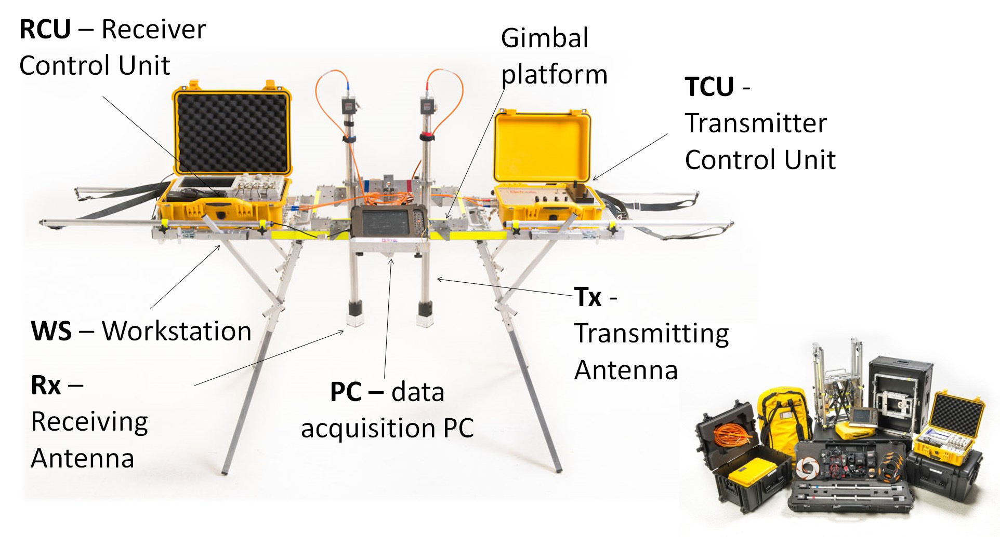 Figure 1 (a): Field ADR scannerLaboratory ADR Scanner
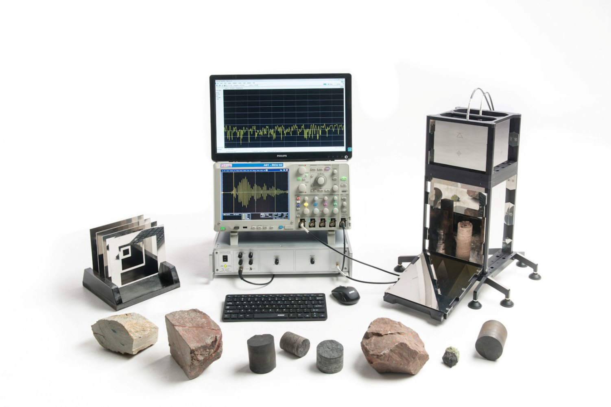 Figure 1 (b): Laboratory ADR scannerSystem Diagram
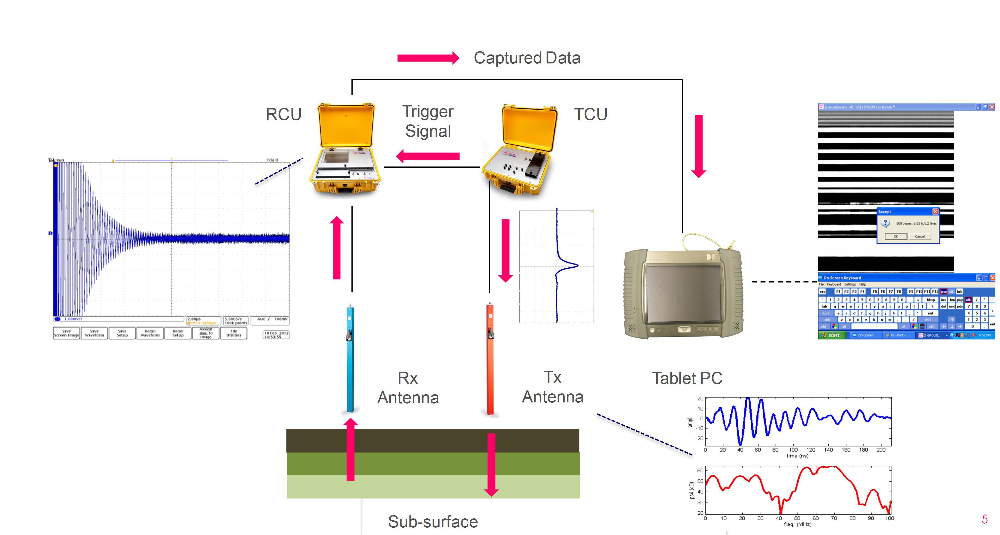 Figure 2: System diagram showing signal transmission and reception of radio wavesSpecifications
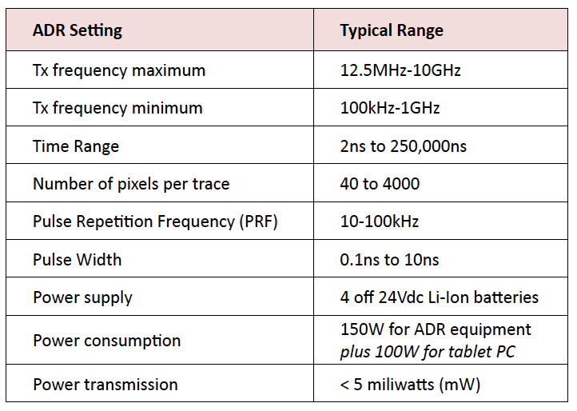 Table 1: Specifications of ADR Scanner systemsSimulation & Forward Modelling
The forward model developed (Doel et al., 2014) is outlined below and in the resulting system of partial differential equations (1) and (2):
- Maxwell equations coupled to ground model
- Propagate pulse straight down and back
- Collect voltage at virtual detector point
- Spatially variable ground parameters:
- Relative permittivity
- Conductivity
- Debye relaxation time
- 8th order finite-difference time-domain (FDTD) numerical simulation
- Perfectly matched layers (PML) at simulation boundaries
- Add Gaussian noise to simulation output
- All model parameters calibrated to experiments
- Ground model: permittivity, conductivity and polarization (P)
- E electric field, σ conductivity, τ Debye relaxation time, εr dielectric
Virtual Lithological Logs
In the field, four main types of field survey are conducted WARR Scan, P-Scan, WARR stares and stare scans. The tracked WARR files are used to rectify depths along the survey section these can be used to rectify the stares. These Scans exist in a TIME domain but by using proprietary software the image can be rectified into a SPACE domain. FFT analysis can be carried out in both domains yielding energy, frequency and phase results but it is important to realise that frequency on a time domain image is measured in cycles per second (Hz) whereas frequency on a space domain image is measured in cycles/m. The time domain image is used to produce spectral lines and other spectral statistics such as range and reflectivity, all of which help to classify/ identify lithological units or mineral and rock types. The space domain image can provide useful spectral statistics for identifying structural features such as faults, fractures and fissures.
A variety of measurements can be made, which when taken together should give a specific signature for the material under investigation (“Spectroscopy”). Spectral lines are produced at the atomic scale, and can be used to identify the material composition of any medium capable of transmitting a beam of light (in this case a lased ADR beam of radiowaves and microwaves). They result from the interaction at the quantum scale between radiowave and microwave photons in this coherent beam and atoms or molecules of rock layer materials. Such measurements include Spectral Line analysis, ADR Resonant Energy Ratio and the ADR Energy Gamma method.
The outputs from the processing gives information in a lithological form showing Energy Log, Dielectrics and Energy ADR (Figure 3). Furthermore, two-dimensional images can be collected by continuously scanning.
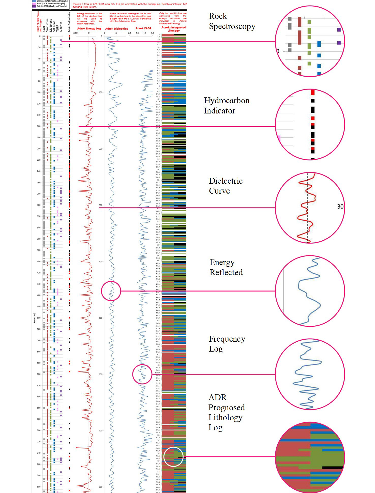 Figure 3: Typical Virtual Lithological Log produced by ADRTemperature Measurements using ADR
The Predicted Temperature Models developed for normal investigation of cold and hot oil reservoirs may be summarised in TABLE 2. These algorithms are all based on the fundamental law of Stefan Boltzmann, which states that the total energy radiated per unit surface area of a black body in unit time is proportional to the fourth power of its thermodynamic temperature (ρ=σT^4) . Adrok have discovered that there is a constant relationship between the energy density and the wavelength of the pulsed radiowave bandwidths used the ADR transmissions. The ADR Spectral Energy Density Ed(S) is the product of the energy density and the wavelength: Ed(S)=ρλ.
The same temperature models may be applied to extremely cold ground layers such as permafrost zones, in this case the modelling can optionally stop at PT3 which seems to give the best results when compared with Borehole Thermistor Records.
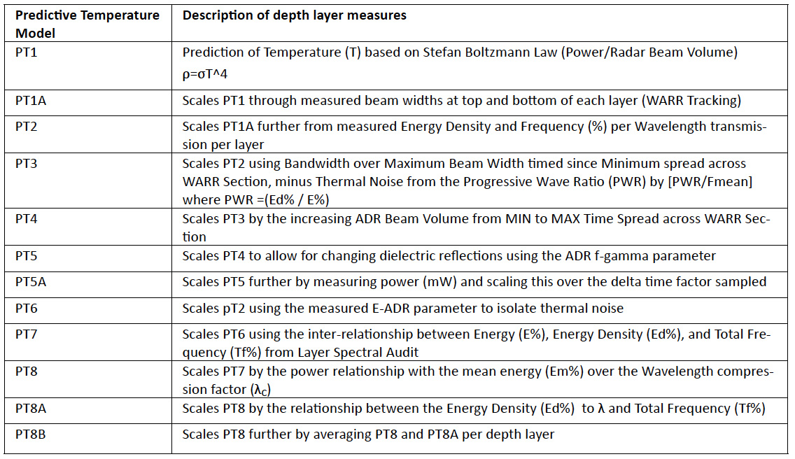 Table 2: Predicted Temperature ModelsReferences
- Doel, van den, K., Jansen, J., Robinson, M., Stove, G. C., and Stove, G. D. C., 2014 Ground penetrating abilities of broadband pulsed radar in the 1-70MHz range. SEG Technical Program Expanded Abstracts 2014: pp. 1770-1774. SEG Denver 2014 Annual Meeting.
- Stove, G. D. C., and Doel, van den, K., 2015, Large depth exploration using pulsed radar. In: ASEG-PESA Technical Program Expanded Abstracts 2015, Perth. 1–4.
Value Proposition for ADR data is Big!
Ideal State : Surface acquisition with wireline like resolution
Current State: Drill & log observation wells between injectors and producers
More data acquired at lower cost will improve activity based decline “surveillance law”
Current State
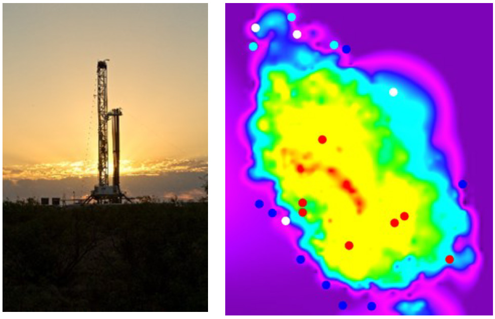 Accumulated BTU map of Kern River with 2014 ADR survey locations sampling cold rock to mature steam chests.Ideal State
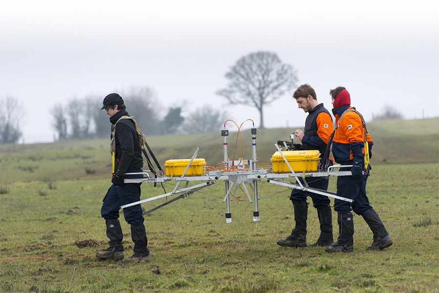 Carbon based motorisation soon to be replaced by Artificial Intelligence (AI) drones. 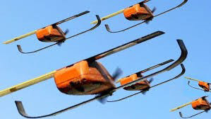Results
We completed 23 test sites. ADR had a success rate of 80% for matching temperature predictions correctly with downhole measurements. Examples of 3 out of 23 are shown below:
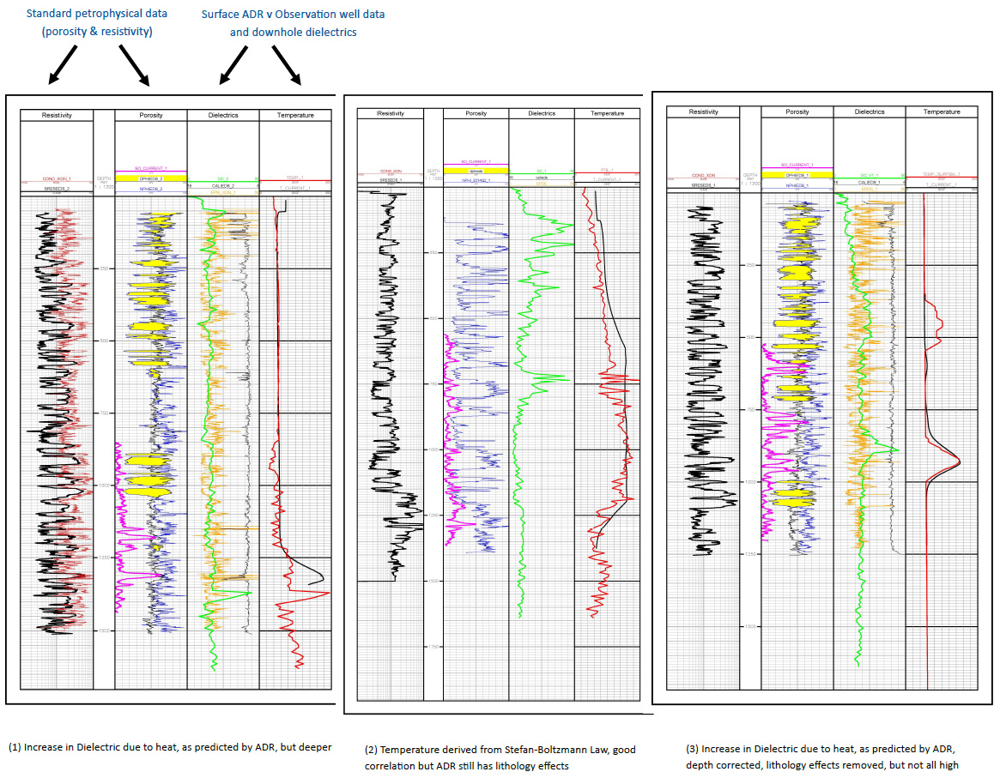Way Forward: current plans for further research and improvements
- ADR has more wave properties to investigate. We are currently investigating the spectroscopy component by typecasting core samples of various Matrix fluid states at various temperatures looking for lithology and fluid type information.
- Oil detection by ADR spectroscopy identifying spectral lines between 100 and 12000Mhz from Kern River field core data measured by laboratory ADR scanner
- Spectral Lines recorded from KR oil saturated core compared to National Institute of Information and Technology NIST microwave data 100 to 5000 megahertz:
- Studies are also underway to characterize non hyperbolic curves, hi resolution, data quantization and resultant FFT information with the goal of converting Wave information into reservoir information
- In conclusion, this research has proven to be a valuable insight into how ADR could be used to remotely measure subsurface temperature changes in the ground before going to the expense of drilling holes and tak-ing downhole tool measurements. The research is still ongoing. Our initial studies will be supplemented by another survey this November 2017 to investigate:
- repeatability,
- asset time-lapse potential,
- a new acquisition geometry to improve time to depth conversion, and
- test depth capability by recording down the Lower Vedder Sands at ~ 6000feet.
- Our expectations are to increase the current success rate of 80% to 95% or better, which would put this technology into a commercial product.